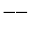

Eight extra "elements" have been put into MOPAC. These represent pure ionic charges, roughly equivalent to the following chemical entities:
|
Chemical Symbol |
Equivalent to |
|
Fr |
Half plus cation, for use with transition metal complexes. Example: To have [TiIIIF6]3- in a more realistic environment, while still having it octahedral, use: [TiIII F6Fr8]+. |
|
+ |
Tetramethyl ammonium, Potassium or Cesium cation + electron |
|
++ |
Barium di-cation + 2 electrons |
|
+3 |
Al3+, a tri-cation, a generic transition metal ion, M3+. |
|
At |
Half minus anion, for use with transition metal complexes. Example: To have [TiIII(H2O)6]3+ in a more realistic environment, while still having it octahedral, use: [TiIII(H2O)6At8]-. |
|
- |
Borohydride Halogen, or Nitrate anion minus electron |
|
 |
Sulfate, oxalate di-anion minus 2 electrons |
|
-3 |
PO43-, a tri-anionic ion, X3-. |
For the purposes of discussion these entities are called 'sparkles': the name arises from consideration of their behavior.